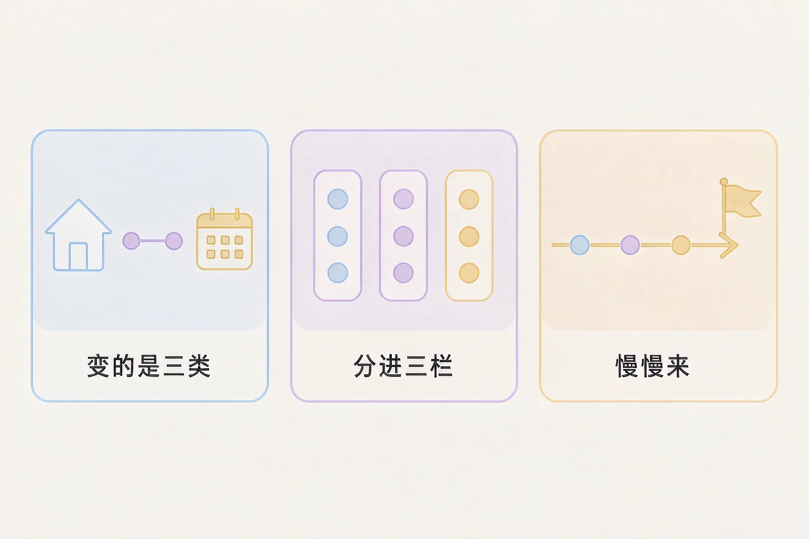
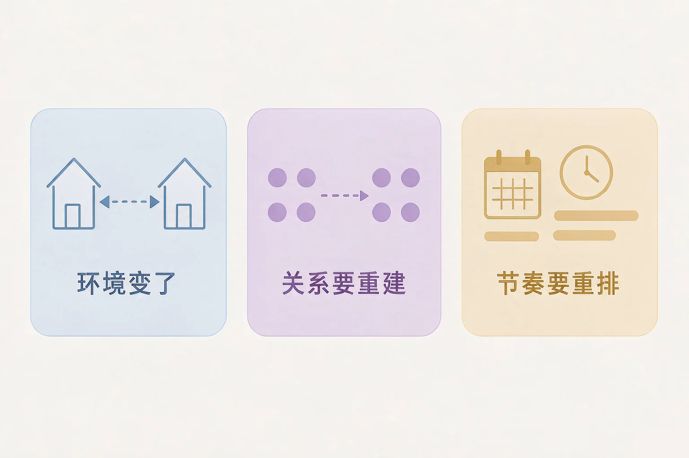
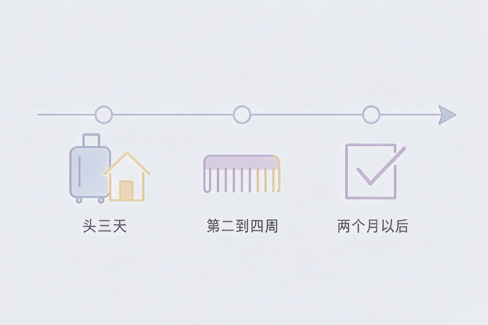

Gallery
v1.0.0 · skill v7.22.0
高中高三 · 生活适应
换了一个地方之后，那种说不上来的不对劲，到底是什么？

选一个最贴近你最近状态的困惑，后面的内容都会围着它展开。
选择或输入后，这节课会围绕你的问题展开。
先凭直觉选一个，选完立刻看到解释——错了也没关系，正好知道要重点听哪里。
1. 过渡期里，下面哪种说法更贴近「变的到底是什么」？
环境、关系、节奏三类常常同时变，所以才觉得哪里都不顺。错因提醒：常见错误是误认为只有环境变了，于是忽略了自己每天都在重新安排生活这件事。
2. 刚到新地方，晚上特别想家。下面哪种理解更合适？
想家属于过渡的一部分，允许它在，比压着它省力。错因提醒：容易把「想家」搞混成「适应能力差」——它反映的是关系的重要，不是能力的高低。
3. 关于「适应」，下面哪种说法更符合实际？
适应需要时间，但也不是纯等——先把基本的节奏立住会帮上忙。错因提醒：误认为适应是一个开关，一按就好，或者反过来认为完全不用做任何事。
把变化拆开来看，就不容易觉得是自己不行。变的通常是环境、关系、节奏这三类，而且常常一起来。
为什么要先学这个？你已经知道换个环境要适应；但把所有不顺手混成一件事之后，很容易得出自己适应能力差的结论；所以先把变化拆成三类，一类一类看。
误认为过渡期要做的第一件事是赶紧认识新朋友。其实先把每天的基本节奏立住，人稳下来了，关系反而更容易建起来。

🔍 深层理解 换个角度再看一遍这件事，看看能不能说出背后的原理。
解释它：为什么过渡期特别累？因为三类变化同时发生，而每一类都要占用注意力。累不是因为你不坚强，是因为同时要处理的确实多。
比较它：「我需要时间」和「我做不好」，说的是完全不同的事。前者是对过程的描述，后者是对自己的判断——过渡期里要把这两句分开。
迁移它：这一套不只用在升学上。换宿舍、换班级、以后换工作、换城市，都可以用这三类先拆一遍。
八条变化，每条先选一个位置，再配一个具体做法。右边三个栏会实时汇总你放进去的内容。
写下来，留给自己：从三个栏里各挑一条，把它们的做法抄在一张纸上，贴在你每天都能看到的地方。
这一段有三句话要说清楚，都是为了把要求放到一个合适的位置上。

误认为想家或者不习惯是一件需要藏起来的事。其实说出来、写下来，或者找一个人聊一聊，往往比硬撑着省力得多。
六件事，每件选一个时间点。选完会给出解释——早一点也可以，晚一点也没关系。
写下来，留给自己：你觉得这几件事里，哪一件是你现在最想先做好的？写下它，再写一句你打算这周怎么开始。
情境：一位同学两周前离开家去外地读书。他说不上哪里不对，就是觉得每天都在忙，又说不出忙了什么。
两个方向都容易走偏：一种是把全部希望压在一句赶紧适应上，结果每天都在评价自己不够好；另一种是什么都不做，只等时间过去，于是头几周一直在原地打转。中间那条路是：先做一小件能做的事，剩下的交给时间。
把期待放在合适的位置：这套做法不保证一个月就完全适应，也不保证不再想家。它能做到的是：让每一天有一点可以自己安排的东西。
先凭直觉选一个，选完立刻看到解释——错了也没关系，正好知道要重点听哪里。
1. 「都一个月了还是不太习惯，看来我真的不行」——这句话最需要改的地方是：
一个月只是过程中的一段时间，不是成绩单。错因提醒：常见错误是误认为习惯得慢等于能力差——换一种问法是：这一个月里哪一件小事比刚来时顺了。
2. 关于「三栏」（我能掌控的 / 需要时间的 / 要找人帮忙的），下面哪种理解更合适？
三栏是给事情分门别类，不是给自己打分。错因提醒：容易把「需要找人帮忙」搞混成「自己不行」——过渡期里找人帮忙，本来就是有效做法之一。
3. 刚到一个新地方，头几天最该先做的是哪一件？
先把最要紧的几件小事解决掉，心里会稳一些。错因提醒：误认为头几天就该迅速合群或立刻进入高效状态，往往会让头几周过得更紧。
三步都选好，下面会生成一句话。它不是承诺，只是把你需要的两样东西提前写下来。
抄下来，留给自己：把生成的这句话抄在一张纸上，和那张三栏的做法清单放在一起。
先凭直觉选一个，选完立刻看到解释——错了也没关系，正好知道要重点听哪里。
1. 到新环境的第一个晚上，你躺在不太熟悉的床上，觉得哪儿都不对。这时更合适的第一步是：
先允许感受在，再把注意力放到明天能做的小事上。错因提醒：常见错误是误认为必须马上压住难受，或者必须马上把自己填满，两种都会更累。
2. 家里打电话问你习不习惯，你其实还不太习惯。更合适的回答是：
说清具体需要什么，是让关心落到实处的方式。错因提醒：容易把「报喜不报忧」搞混成懂事——把话说清楚，家里才帮得上。
3. 两个月后你回看这段过渡，发现自己还有一条没解决。下面哪种想法更合适？
没解决的那一条，可以在三栏里换一个位置再试。错因提醒：误认为过渡有终点线，过了就必须全部搞定——其实它就是一段有起有落的过程。
回到开头那个不太对劲的时刻：当你在一个还不熟悉的地方醒来，觉得哪儿都不对，不必急着给自己下结论。先写下明天要办的两三件小事，再定一个给家里打电话的时间——今天就算过好了。
记忆锚点：三个词帮你记住这节课——拆开看、分三栏、慢慢来。
给别人讲一遍：请用「拆开看、分三栏、慢慢来」这三个词，跟一位也在过渡期的同学说说你自己的一件变化，以及你打算怎么做。
三层练习，做完第一、二层就算通关；第三层留给愿意继续探索的同学。
⭐ 基础巩固（必做）
⭐⭐ 能力应用（必做）
⭐⭐⭐ 迁移挑战（选做）
左边是学它之前要先会的，右边是学会之后可以继续探索的，下面是同一领域的伙伴知识。
图谱正在加载：首次进入需下载知识索引（约 1–3 秒），加载完成后本行会自动消失。